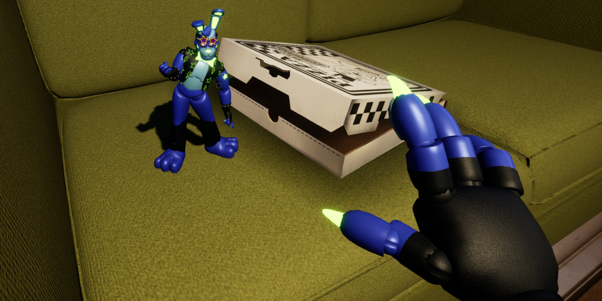
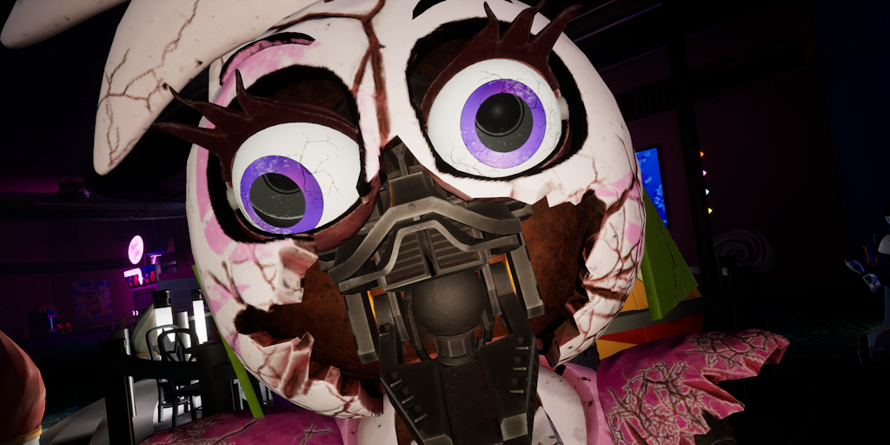
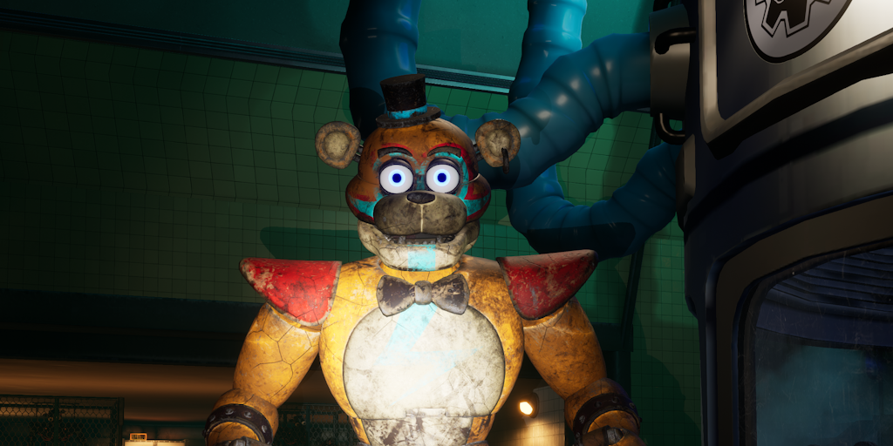

Mods

Security Breach: Old Parts and Service Buttons Restored
Date: March 2026
This mod restores the old parts and service button materials and sound effects from Five Nights at Freddy's: Security Breach.

Security Breach: FNaF AR Wear and Tear Materials
Date: Feburary 2026
This mod brings FNaF AR's Wear and Tear materials back to Five Nights at Freddy's: Security Breach.

THE JOY OF CREATION Demo: Office Hard Mode
Date: December 2025
This mod enhances the difficulty of THE JOY OF CREATION's Office Demo.

Secret of the Mimic: Forsaken over Arnold
Date: October 2025
This mod replaces Arnold's arms with my model's arms.

Security Breach: Shattered Chica Endo Material Fix
Date: September 2025
This mod fixes Shattered Chica Endo from using Glamrock Chica's body material.

Security Breach: Glamrock Freddy's Blue Eyes Restored
Date: September 2025
This mod makes it so Glamrock Freddy has blue eyes before upgrading him with Roxy's eyes.

Security Breach: Tension Ambience Fix
Date: Janurary 2025
This mod fixes the droning tension ambience that was broken after the release of the Security Breach Ruin DLC.

Security Breach: Various Model Swaps
Date: Ongoing
These mods replace characters in Security Breach with other models.